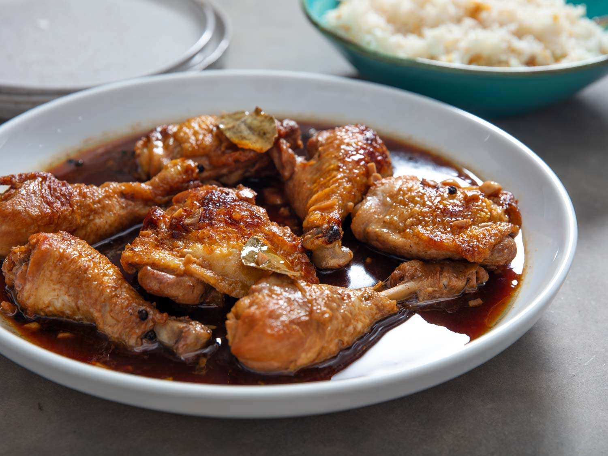

Home
Chicken Adobo

Description
The classic Filipino dish of chicken braised in soy sauce, vinegar, garlic, and bay leaves.
Salty, tangy, and a little sweet, it is best served over a mountain of steamed rice.
Ingredients
- 1 (3 pound) whole chicken, cut into 8 pieces
- ¾ cup distilled white vinegar
- ½ cup soy sauce
- 2 tablespoons thinly sliced fresh ginger root
- ½ tablespoon black peppercorns
- 1 bulb garlic, peeled and crushed
- 2 bay leaves
Steps
- Combine chicken, vinegar, soy sauce, ginger, peppercorns, garlic, and bay leaves in a Dutch oven; bring to a boil over medium heat. Reduce heat, cover, and simmer for 30 minutes, basting chicken occasionally with the sauce.
- Remove the lid and continue to simmer until liquid has reduced by half, 5 to 10 minutes. An instant-read thermometer inserted near the bone should read 165 degrees F (74 degrees C).
- Transfer chicken to a serving plate. Strain liquid from the pot to remove bay leaves and other solids.
- Serve chicken hot and drizzle with strained sauce.